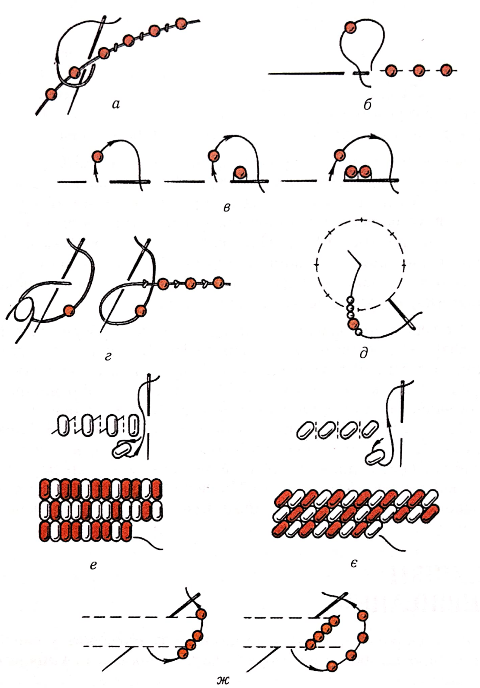
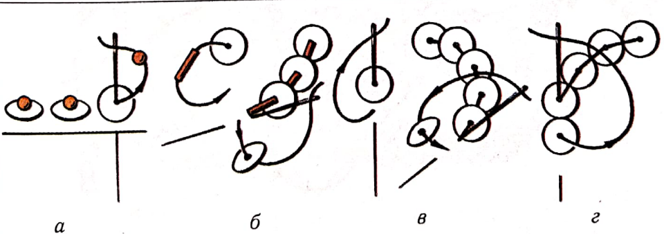
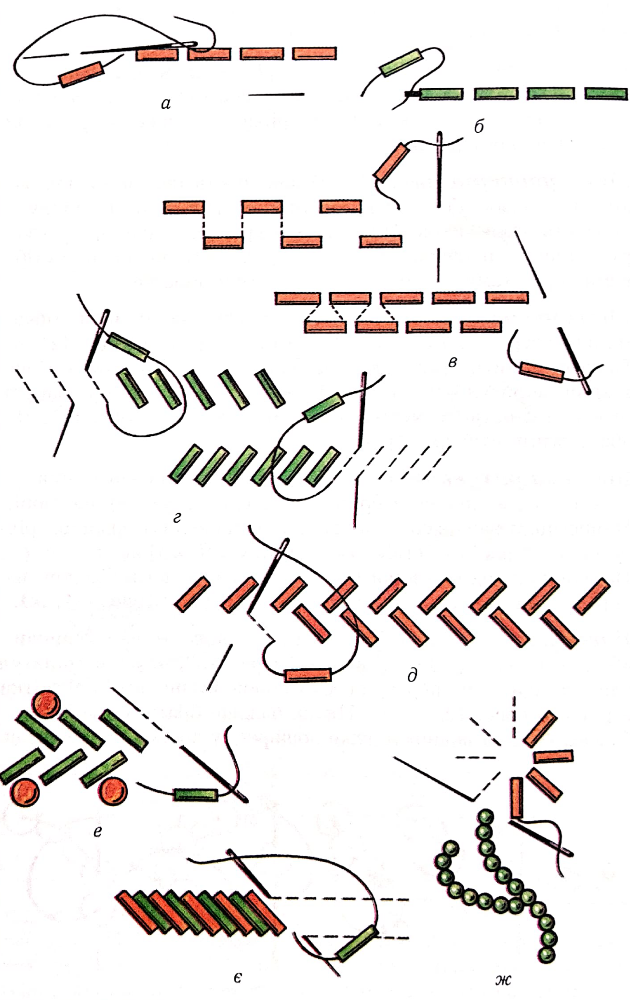
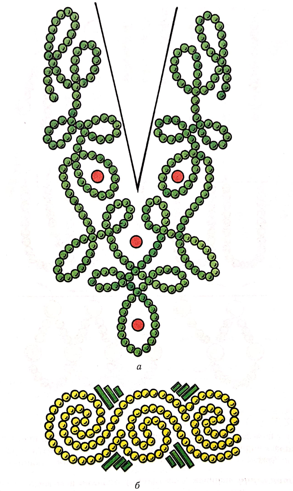
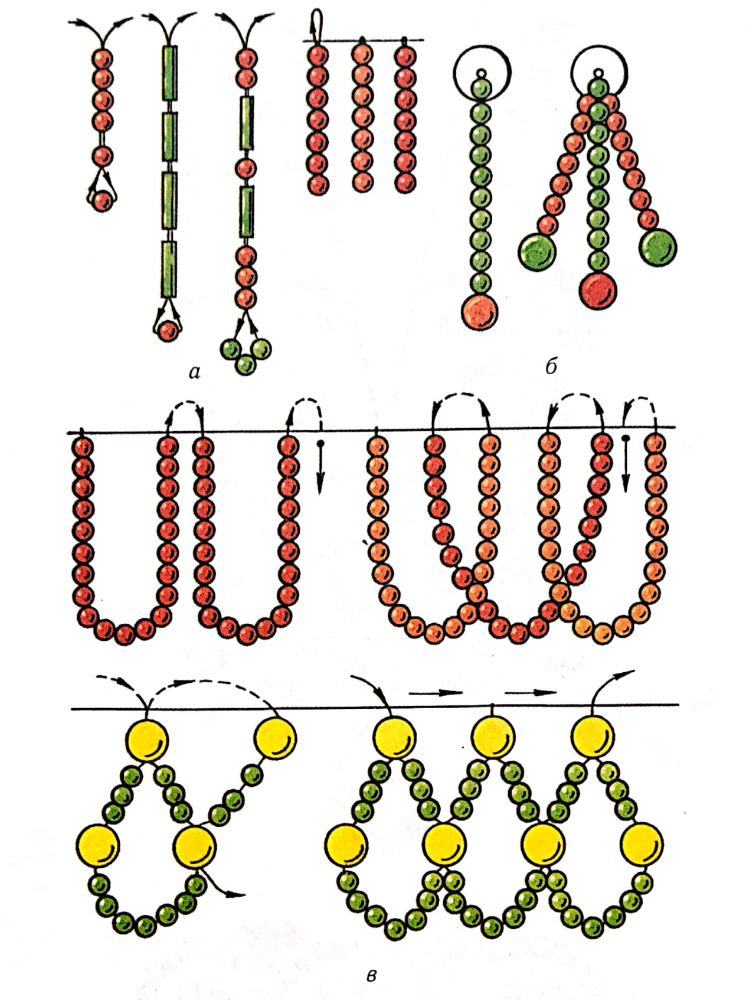

ЛАБОРАТОРНО-ПРАКТИЧНА РОБОТА
Тема: «Вишивання бісером, намистом, стеклярусом»
Мета:засвоєння техніки вишивання бісером, намистом, стеклярусом; формування вмінь вишивати бісером, намистом, стеклярусом; виховувати уважність, охайність
Матеріали та інструменти: тканина, бісер та стеклярус різних розмірів та кольорів, блискітки, капронові та прості нитки, віск, голки, ножиці, наперсток, п’яльця.
Порядок виконання роботи:
- Ознайомитись з теоретичними відомостями роботи.
- Підібрати тканину, голки та нитки, бісер та стеклярус для роботи.
- Згідно з технологічними вимогами виконати зразки вишивки бісером, стеклярусом, блискітками різними техніками.
- Розробити узор нескладної вишивки бісером, стеклярусом, намистинами, блискітками для оздоблення виробу (комірець, манжети, виріз сукні, гаманець, сумочка, косметичка тощо).
Теоретичні відомості:
В Україні здавна вишивали намистом і бісером. У І ст. до н.е. – І ст. н.е. тут було знайдено взуття та предмети побуту, вишиті непрозорим бісером, золотими нитками та коштовним камінням. Найдавніше згадування про шиття перлами на Русі є у Переяславському літописі X ст. У X–XI ст. крім вишивання лляними, шовковими, золотими й срібними нитками на Русі існувало садження –вишивання перлами, коралями, коштовним камінням. Перли широко застосовували в гаптуванні, їх було безліч у багатьох річках Півночі, в басейні Дніпра та на Кримському узбережжі Чорного моря. Крім місцевих застосовували також привізні перли – з Персії, Індії, з острова Цейлон.
На відміну від нанизування садження мало свої прийоми виконання і потребувало від рукодільниці спеціальних навичок та майстерності.
Техніка садження (шиття) перлами дуже різноманітна. Спочатку вугіллям, крейдою або фарбою на тканину наносили узор, а потім майстрині нашивали кожну намистинку окремо або насаджували, тобто нанизували, їх па міцну лляну або шовкову нитку чи кінську волосінь, викладали її по узору та прикріплювали до тканини по контурах узору іншою голкою з ниткою поперечними стібками, які створювали зиґзаґи, хрести, ромби тощо. Цей спосіб шиття уприкріп відомий здавна. Перли нашивали й безпосередньо на тканину упрокол або на попередньо нашитий настил із білого шнура – по шпуру або по білі, де замість шнура викладали м’які конопляні або бавовняні нитки білого кольору.
До XVIII ст. це мистецтво побутувало у царських, княжих і боярських майстернях-світлицях, у жіночих монастирях, де майстрині в гаптуванні та садженні використовували крім перлів і коштовного каміння намисто, бісер, стеклярус та блискітки. Бісером і стеклярусом вишивали сам орнамент, і тканину, тобто тло, зашивали блискітками, шовковими, золотими й срібними нитками, підкладали кольорову фольгу.
Усередині XVIII ст. бісер і стеклярус застосовували у суспільних вишивках, де кольоровий бісер створював не тільки узор, а й вкривав тло виробу. З появою дуже дрібного бісеру вдосконалювалася техніка виконання, яка потребувала великої майстерності, уміння та акуратності. Бісер нашивали на полотно й стежили, щоб ряди бісеринок були покладені у напрямку ниток полотна, щільно прилягали одна до одної та ряд до ряду. Поява канви – спеціальної тканини – спростила й полегшила процес вишивання. Крім полотна почали застосовувати такі тканини, як шовк, оксамит, тюль, кісею.
У XIX ст. на зміну золотим і срібним ниткам прийшли дешевші з позолоченої та посрібленої міді, а на зміну дорогим перлам і коралям – перламутр, скляне намисто й бісер. У вишивках бісером почали застосовувати товсту вовняну пряжу гарус та шовкові нитки, а тлом були тканина і канва.
Кольоровий стеклярус і бісер у другій половині XIX ст. з’явилися в оздобленні жіночого одягу та головних уборів. Металевий і порцеляновий бісер, чорний блискучий бісер і стеклярус широко застосовували у побуті городяни в кінці XIX – на початку XX ст. Його використовували для оздоблення ридикюлів і гаманців; прикрашали накидки, ротонди і капелюхи; вишивали ліфи й подоли суконь, робили торочки й підвіски, ґудзики, пояси, пряжки тощо.
Нині бісером прикрашають свій одяг і головні убори жителі Кавказу – хевсури й курди; народи Прибалтики – естонці, саамі, литовці; місцеве населення Далекого Сходу, народи Молдови. В Україні мистецтвом вишивання бісером славляться майстрині Буковини, Прикарпаття й Закарпаття. Тут бісером, стеклярусом і блискітками (лелітками) вишивають сорочки, кептарі, камізелі, спідниці, пояси, дівочі головні убори. Особливо барвисті весільні сорочки Буковини та Молдови, в яких бісерною вишивкою густо заповнюють майже весь перед виробу, рукави й спину.
Техніки вишивання.Бісер, стеклярус, блискітки та намисто застосовують у вишиванні виробів, які не потребують частого прання та хімічного чищення.
Основою для вишивок намистом і бісером є полотно, льон, льон з лавсаном, грубий шовк, оксамит, атлас, вовна, сукно. Нитки застосовують міцні, щоб намистинки не перетирали їх, вощені та під колір тканини виробу. Намистинки треба брати з великими отворами, крізь які легко проходять голка з ниткою.
Виконують вишивку вручну, досить часто у поєднанні з гладдю, хрестиком та декоративними швами, зі шнуром, вузенькою тасьмою тощо. Вишивають по узору, нанесеному на тканину, або по канві, яку потім висмикують. Під час вишивання по канві слід стежити, щоб бісеринки щільно прилягали одна до одної й не просвічувалися нитки канви. Для роботи беруть бісер і стеклярус одного розміру.
Техніка вишивання намистом і бісером не дуже складна, але потребує навичок і кмітливості. Основна умова – бісеринки під час вишивання мають лягати рівно, з однаковим нахилом і на однаковій відстані.
Шиття уприкріп (рис. 121, а) виконують так: на нитку, закріплену на тканині вузликом, голкою нанизують потрібну кількість намистинок. Нитку викладають по нанесеному узору, а іншою, робочою, ниткою закріплюють до тканини стібками-пересягами у проміжках між намистинками.

Рис. 121.Способи вишивання бісером і стеклярусом:
а - уприкріп; б, в - упрокол; г - вузликовим швом; д - довгими стібками;
е-ж - шиття за рахунком
Шиття упрокол – це закріплення кожної намистинки стібками шва вперед голку (рис. 121, б) та назад голку (рис. 121, в).Голкою на нитку набирають намистинку й закріплюють її на тканині впритул одна до одної або на деякій відстані. Закріплювати намистинки можна й вузликовим швом (рис. 121, г)або довгими стібками (рис. 121, д).
Шиття за рахунком застосовують при вишиванні узорів хрестиком, де кожна бісеринка відповідає хрестику на узорі. Намистинки нашивають на тканину відповідними рядами, рівними або похилими стібками шва півхрестик (рис. 121, е, є). Невеликі елементи узорів можна суцільно зашити бісером, набираючи на нитку одночасно кілька бісеринок (рис. 121, ж).
Блискітки нашивають на тканину за допомогою
бісеринки або стеклярусу на деякій відстані (рис. 122, а, б) чи впритул
одну до одної або перекриваючи половину нижньої блискітки верхньою (рис.
122, в, г). Нитки бажано брати під колір блискіток Такі вишивки дуже
поширені у костюмах для сцени.

Рис. 122.Вишивання блискітками
Слід пам’ятати, що блискітки деформуються під впливом тепла і пари, тому таку вишивку не можна прасувати гарячою праскою ні з лицьового боку, ні через вологу тканину.
Стеклярус нашивають на тканину стібками шва вперед голку та назад голку (рис. 123, а, б), півхрестиком (рис. 123, в-є).

Рис. 123.Вишивання стеклярусом
Для вишивання квітів, стебел і листя застосовують стібки штрихової гладі (рис. 123, ж).
Комірці, манжети, виріз сукні можна оздобити нескладною вишивкою у вигляді вузенької смужки, вишити гаманець, сумочку, диванну подушку (рис. 124).

Рис. 124.Узори для вишивання бісером, намистом і стеклярусом
Сукню, театральну сумочку нескладно прикрасити торочками з бісеру,
стеклярусу й дуже дрібних штучних перлин (рис. 125). Для цього спочатку
закріплюють нитку на тканині виробу, а потім набирають потрібну кількість
намистинок для однієї торочки. Протягують голку з ниткою в передостанню
намистинку і крізь увесь ряд. Щоб намистинки не провисали, притягують нитку
і закріплюють її на тканині в місці проколу. Потім нанизують усі наступні
нитки торочок (рис. 125, а, б).Виріб можна
прикрасити також фестонами з петельок нанизаного бісеру (рис. 125, в).

Рис. 125.Оздоблення виробів бісером і стеклярусом: а, б - торочками; в - фестонами
Торочки з ажурних зубців (рис. 126) складніші в роботі. Перший ряд зубця роблять із трьох або більше петельок нанизаних на нитку бісеринок. Для першої петлі завжди набирають на нитку непарну кількість намистинок, а для решти – парну (рис. 126, а). Закінчивши перший ряд, нитку закріплюють на тканині й починають нанизувати другий ряд із двох петельок. Спочатку голку з ниткою протягують крізь чотири останні (у нашому прикладі) намистинки першого ряду, а потім набирають п’ять намистинок для першої петлі другого ряду (рис. 126, б). Далі нанизують зубок, як показано на рис. 126, в. Для роботи використовують і стеклярус (рис. 126, г, д).

Рис. 126.Оздоблення виробів ажурними зубцями
Кожну петельку, за бажанням, можна набирати з більшої кількості намистинок, а зубок – з більшої кількості петельок.
Контрольні питання:
- Як у давнину називали вишивання перлами, коралями, коштовним камінням?
- Які техніки вишивання бісером та стеклярусом ви знаєте?
- Охарактеризуйте технологічну послідовність пришивання намистин.
- На яких виробах зазвичай виконують вишивку бісером, стеклярусом, блискітками?
- Охарактеризуйте послідовність виконання торочок.